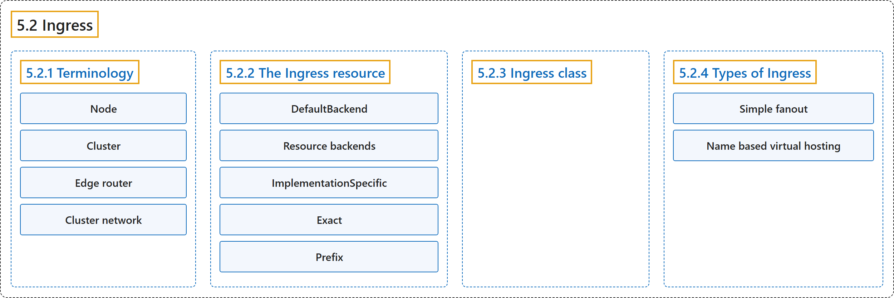

5.2 Ingress
Classification

Glossary
| Term | Definition | 中文翻译 | Source |
|---|---|---|---|
| 5.2 Ingress Ingress |
"An API object that manages external access to the services in a cluster, typically HTTP." | 一个 API 对象，管理从外部访问集群中的服务，通常是 HTTP。 | The Kubernetes Authors, n.d., "Ingress", para. 2 |
| 5.2.1 Terminology 术语 |
"For clarity, this guide defines the following terms:" | 为清楚起见，本指南定义以下术语： | The Kubernetes Authors, n.d., "Terminology", para. 1 |
| Node 节点 |
"Node: A worker machine in Kubernetes, part of a cluster." | 节点：Kubernetes 中的工作机器，是集群的一部分。 | The Kubernetes Authors, n.d., "Terminology", para. 2 |
| Cluster 集群 |
"Cluster: A set of Nodes that run containerized applications managed by Kubernetes." | 集群：一组节点，运行由 Kubernetes 管理的容器化应用。 | The Kubernetes Authors, n.d., "Terminology", para. 3 |
| Edge router 边缘路由器 |
"Edge router: A router that enforces the firewall policy for your cluster." | 边缘路由器：一个路由器，为集群执行防火墙策略。 | The Kubernetes Authors, n.d., "Terminology", para. 4 |
| Cluster network 集群网络 |
"Cluster network: A set of links, logical or physical, that facilitate communication within a cluster according to the Kubernetes networking model." | 集群网络：一组逻辑或物理的链路，按照 Kubernetes 网络模型促进集群内的通信。 | The Kubernetes Authors, n.d., "Terminology", para. 5 |
| 5.2.2 The Ingress resource Ingress 资源 |
(No definition) | （无定义） | The Kubernetes Authors, n.d., "The Ingress resource" |
| DefaultBackend 默认后端 |
"An Ingress with no rules sends all traffic to a single default backend" | 没有规则的 Ingress 会把所有流量发送到单个默认后端 | The Kubernetes Authors, n.d., "DefaultBackend", para. 1 |
| Resource backends 资源后端 |
"A Resource backend is an ObjectRef to another Kubernetes resource within the same namespace as the Ingress object." |
Resource 后端是一个指向另一个 Kubernetes 资源的 ObjectRef，该资源位于与 Ingress 对象相同的命名空间。 |
The Kubernetes Authors, n.d., "Resource backends", para. 1 |
| ImplementationSpecific ImplementationSpecific |
"ImplementationSpecific: With this path type, matching is up to the IngressClass." |
ImplementationSpecific：使用这种路径类型时，如何匹配由 IngressClass 决定。 |
The Kubernetes Authors, n.d., "Path types", para. 2 |
| Exact Exact |
"Exact: Matches the URL path exactly and with case sensitivity." |
Exact：精确匹配 URL 路径，区分大小写。 |
The Kubernetes Authors, n.d., "Path types", para. 3 |
| Prefix Prefix |
"Prefix: Matches based on a URL path prefix split by /." |
Prefix：匹配依据是以 / 分隔的 URL 路径前缀。 |
The Kubernetes Authors, n.d., "Path types", para. 4 |
| 5.2.3 Ingress class Ingress 类 |
"Ingresses can be implemented by different controllers, often with different configuration." | Ingress 可以由不同的控制器实现，配置也往往不同。 | The Kubernetes Authors, n.d., "Ingress class", para. 1 |
| 5.2.4 Types of Ingress Ingress 的类型 |
(No definition) | （无定义） | The Kubernetes Authors, n.d., "Types of Ingress" |
| Simple fanout 简单扇出 |
"A fanout configuration routes traffic from a single IP address to more than one Service, based on the HTTP URI being requested." | 扇出配置把来自单个 IP 地址的流量路由到多个 Service，依据是所请求的 HTTP URI。 | The Kubernetes Authors, n.d., "Simple fanout", para. 1 |
| Name based virtual hosting 基于名称的虚拟主机 |
"Name-based virtual hosts support routing HTTP traffic to multiple host names at the same IP address." | 基于名称的虚拟主机支持把 HTTP 流量路由到多个主机名，这些主机名位于同一 IP 地址。 | The Kubernetes Authors, n.d., "Name based virtual hosting", para. 1 |
References
The Kubernetes Authors. (n.d.). Ingress. Kubernetes Documentation. Retrieved October 31, 2026, from https://kubernetes.io/docs/concepts/services-networking/ingress/